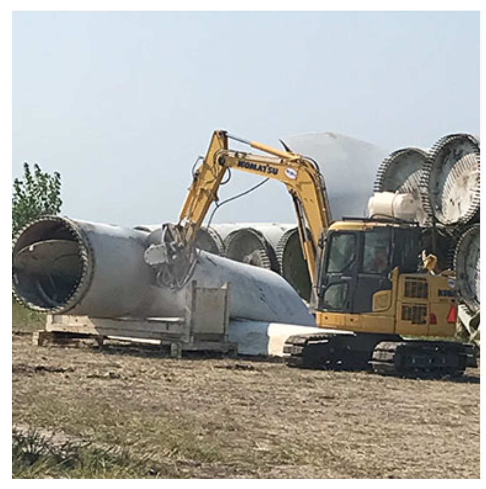
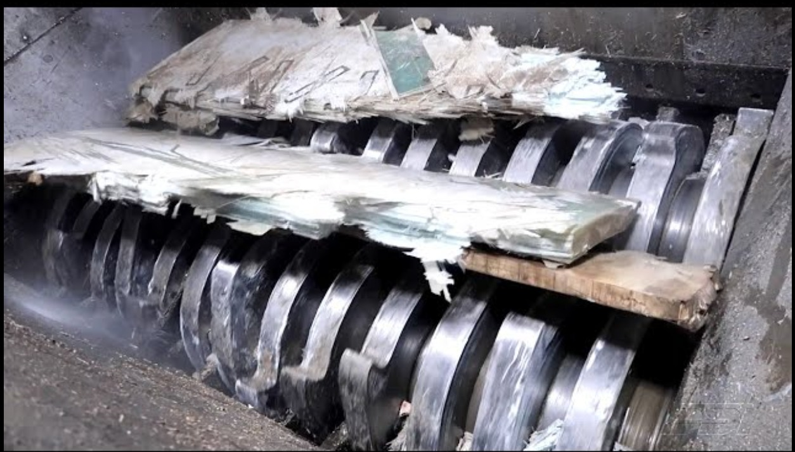
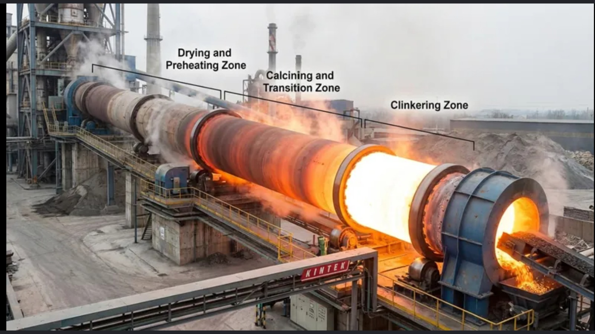
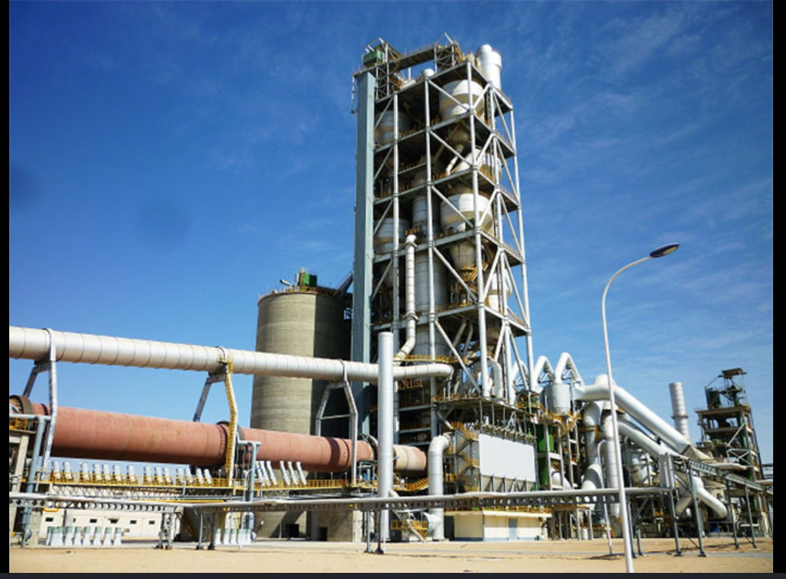
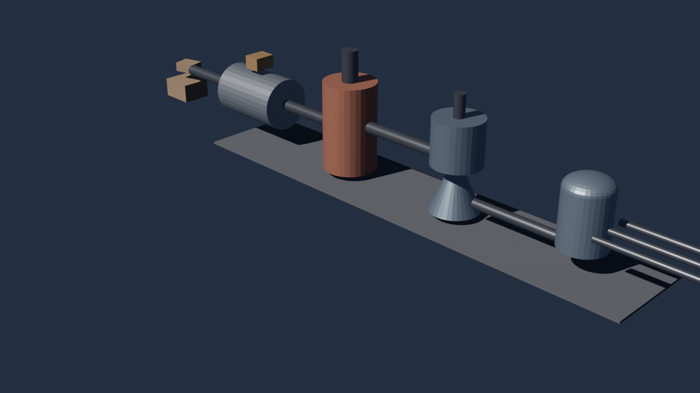

The Process — in Detail
Five stages from end-of-life wind turbine blade to cement industry feedstock — material flow, energy flow, inputs and outputs.
Sprint 2 Deck
The Five Stages
01
Decommissioning & On-Site Pre-Treatment
Mechanical dismantling of intact end-of-life wind turbine blades at the wind farm. Hydraulic shears and diamond wire saws cut the giant composite structures into transportable segments.
Inputs
- 5,700 kg EoL blades
- 969 MJ diesel energy
Outputs
- 5,700 kg cut segments (1–2 m)
- Minor CO₂ & exhaust gas
02
Mechanical Shredding & Processing
Multi-stage downsizing of blade segments at the recycling facility. Industrial shredders reduce the composite to granules; cross-belt magnets extract embedded metals into a separate stream.
Inputs
- 5,700 kg blade segments
- 1.5 MWh electricity
Outputs
- 5,415 kg shredded GFRP (20–30 mm)
- 285 kg scrap metals
03
Thermal Treatment & Decomposition
High-temperature chemical cracking inside the cement calciner/kiln. The composite separates into a solid mineral phase and a volatile gas phase, releasing significant exothermic heat back into the kiln.
Inputs
- 5,415 kg shredded GFRP
Outputs
- ~4,415 kg mineral slag + char
- ~1,000 kg volatile flue gas
- Exothermic heat (re-absorbed)
04
Solid–Gas Separation & Fine Classification
Routing and preparation of the thermal outputs. Exhaust fans, electrostatic precipitators and air classifiers filter the gases and chemically homogenise the molten mineral stream before clinkering.
Inputs
- ~4,415 kg hot mineral/char residue
- ~1,000 kg flue gases
Outputs
- ~4,415 kg refined mineral slag oxide
- ~1,000 kg filtered stack emissions
05
Material & Energy Substitution (Clinker Synthesis)
Final chemical transformation. Recycled minerals replace sand and bauxite in cement clinker formation; resin combustion heat substitutes for coal energy. The end product is commercial cement clinker with blade-derived mineral phases (Alite, Belite, Aluminate).
Inputs
- ~4,415 kg molten oxides
- Captured chemical heat
- Calcined limestone (raw meal)
Outputs & Avoided
- Cement clinker (commercial)
- 342 kg coal avoided
- 177 kg SiO₂ (sand) avoided
- 32 kg Al₂O₃ (bauxite) avoided
Inspiration — Real-World References
The visual target we're aiming for. Each image maps to a stage in the process above.

Stage 01
Blade dismantling on-site with hydraulic shears

Stage 02
Industrial shredder reducing GFRP to granules

Stage 03
Cement kiln — drying, calcining, clinkering zones

Stage 04 & 05
Cement plant preheater tower & clinker line
3D Model — First Draft in Blender

Flow 1 — Static block model
Blade waste · Feed mixer · Heater HT-1 · Solid-gas separator · Secondary separator · Three output streams (Filler · Cement · Industrial Reuse). 25 named objects, ready for detail passes from Sprint 3 onwards.